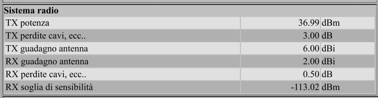

Studio teorico Sottorete VHF Prefettura AV - n.20 COM Provincia di Avellino 26/06/2020
Indice
Introduzione
La Prefettura di Avellino Ufficio Territoriale del Governo Area V – Protezione Civile Difesa Civile e Coordinamento del Soccorso Pubblico
decretava il 18 gennaio 2012 con Circolare Prefettizia n.1039/2012 l'istituzione dei seguenti centri operativi misti:
C.O.M. n. 1 Altavilla Irpina
C.O.M. n. 2 Ariano Irpino
C.O.M. n. 3 Atripalda
C.O.M. n. 4 Avellino
C.O.M. n. 5 Baiano
C.O.M. n. 6 Calitri
C.O.M. n. 7 Caposele
C.O.M. n. 8 Cervinara
C.O.M. n. 9 Grottaminarda
C.O.M. n. 10 Lacedonia
C.O.M. n. 11 Lauro
C.O.M. n. 12 Mercogliano
C.O.M. n. 13 Mirabella Eclano
C.O.M. n. 14 Montella
C.O.M. n. 15 Montemiletto
C.O.M. n. 16 San Mango sul Calore
C.O.M. n. 17 Sant’Angelo dei Lombardi
C.O.M. n. 18 Serino
C.O.M. n. 19 Solofra
C.O.M. n. 20 Vallata
Si riportano la Circolare Prefettizia n.1039/2012, l'allegato della Circolare con articolazione COM/COC e relativa mappa provinciale.
Decreto Prot. n.1039/2012 - 18 gennaio 2012
allegato nuovi COM Decreto Prot. n.1039/2012 - 18 gennaio 2012
Tavola COM e COC
Alcuni COM riportati in una mappa di Google.....
.
Copertura IR8E riportata in Google Earth (particolare - siti S.Stefano del Sole , S.Lucia di Serino ....)
(torna all'indice)
Capitolo Primo - Coperture teoriche dei Ripetitori Attivi e della Sala Radio Prefettura
Allo scopo di evidenziare eventuali criticità relative alla coperture dei territori sedi dei COM da parte dei Ripetitori attivi , si è provveduto a realizzare una serie
di verifiche teoriche attraverso la piattaforma Radio Mobile on line by VE2DBE
Radio Mobile Online
Radio Mobile Online is a radio wave propagation prediction tool dedicated to amateur radio.
It uses digital terrain information and a mathematical model to simulate radio transmissions between two fixed sites (radio link) or between a fixed site and a mobile (Radio coverage).
The digital terrain information comprises two databases: Elevation and land cover. Those databases are located on the server and represent a total of 198 GigaBytes.
Radio Mobile is a popular tool for RF studies. Between 2012 and 2015 663304 studies have been performed and 26198 accounts have been made. More information? Follow this link: RMW Online popularity.
Di seguito la reportistica per IR8AI Trevico 10W EIRP , IR8E Monte Tuoro 10W EIRP , Radio Prefettura 50W TX.
Copertura 10W ERP IR8AI Trevico
Copertura 10W ERP IR8E Monte Tuoro
Copertura 50 W Prefettura
(torna all'indice)
Capitolo Secondo - Verifica Performance teoriche dei collegamenti Ripetitori attivi - COM
Allo scopo di verificare in maniera teorica le performance dei collegamenti realizzabili tra i Ripetitori attivi e le sale radio COM , si è provveduto ad effettuare una serie
di simulazioni attraverso la predetta piattaforma Radio Mobile on line by VE2DBE
Le seguenti sono riferite al Ripetitore IR8E di Monte Tuoro :
IR8E/C.O.M. n. 12 Mercogliano
IR8E/C.O.M. n. 13 Mirabella Eclano
IR8E/C.O.M. n. 14 Montella
IR8E/C.O.M. n. 16 San Mango sul Calore
IR8E/C.O.M. n. 17 Sant’Angelo dei Lombardi
IR8E/C.O.M. n. 19 Solofra
IR8E/C.O.M. n. 2 Ariano Irpino
IR8E/C.O.M. n. 4 Avellino
IR8E/C.O.M. n. 6 Calitri
IR8E/C.O.M. n. 8 Cervinara
IR8E/COM Prefettura da IR8E
IR8E/C.O.M. n. 15 Montemiletto
IR8E/C.O.M. n. 11 Lauro
IR8E/C.O.M. n. 18 Serino
Capitolo Terzo
I collegamenti tra ponte radio e COM può essere schematizzato mediante lo schema a blocchi della figura 1.
I parametri che permettono di verificare le performance del collegamento sono:

- PT (dBm) la potenza TX emessa dal trasmettitore (TX potenza);
- le attenuazioni AF (Tx) introdotte dai cavi e dei componenti della linea di trasmissione (TX perdite cavi, ecc.);
- il guadagno GT dell’antenna trasmittente (TX guadagno antenna);
- l’attenuazione ASL dello spazio libero che dipende dalla lunghezza della tratta d e dalla frequenza di trasmissione f secondo la relazione:
- l’attenuazione AP = AO (ostacoli) + AA (alberi) + AE (edifici) + AS (statistica) (valori ricavati da RM dalle mappe)
- il guadagno GR dell’antenna ricevente (RX guadagno antenna);
- l’attenuazione AF (Rx) del cavo d’antenna che collega l’antenna ricevente con il ricevitore (RX perdite cavi, ecc.);
La potenza equivalente isotropica irradiata risulta EIRP (dBm) = PT (dBm) + GT (dB) - AF(Tx) (dB)
In Watt EIRP dbW = 1/1000 * 10^(EIRP/10)
Il Segnale Ricevuto risulta PR (dBm)= PT (dBm) - AF (Tx) (dBm) + GT (dB) - ASL(dBm) – AP (dBm) + GR (dB) - AF (Rx) (dBm)
(torna all'indice)